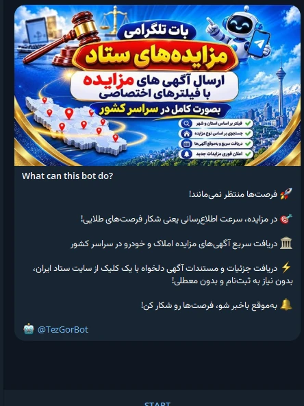

صرفهجویی در زمان
بهجای بررسی روزانه صفحات پراکنده، پیامهای مرتبط را در یک مسیر مشخص دریافت کنید.
دستگاههای اجرایی و عمومی، معاملات خود را در سامانه تدارکات الکترونیکی دولت، یعنی setadiran.ir، منتشر میکنند. تزگور آگهیهای مرتبط را بر اساس شهر، استان و نوع معامله سریعتر جلوی چشم شما میآورد.

وقتی صدها آگهی در شهرها و دستهبندیهای مختلف منتشر میشود، چند ساعت تأخیر میتواند به معنی از دست رفتن یک فرصت مناسب باشد.
بهجای بررسی روزانه صفحات پراکنده، پیامهای مرتبط را در یک مسیر مشخص دریافت کنید.
استان، شهر و نوع آگهی مورد نیازتان را انتخاب کنید تا تمرکزتان روی موارد قابل اقدام بماند.
با کلیک روی لینک ارسالشده توسط ربات، جزئیات، شرایط و مستندات آگهی را سریع بررسی کنید.
از اعلانهای مزایده تا پوشش مناقصات دولتی، مسیر توسعه تزگور برای کمکردن اصطکاک جستجو طراحی شده است.
بر اساس مقررات معاملات دولتی و برگزاری مناقصات و مزایدات، بسیاری از دستگاههای اجرایی و نهادهای عمومی باید فرایندهای معاملاتی خود را در سامانه تدارکات الکترونیکی دولت ثبت و منتشر کنند. تزگور برای رصد سادهتر همین اطلاعات طراحی شده است.
تزگور لینک آگهی و اطلاعات منتشرشده را برای بررسی اولیه در اختیار شما میگذارد. شرایط نهایی هر معامله را از منبع رسمی و مطابق الزامات همان آگهی بررسی کنید.
پس از ورود به ربات، از منوی تنظیمات، استانها و دستهبندیهای مورد نیازتان را انتخاب کنید تا اعلانها مرتبطتر شوند.